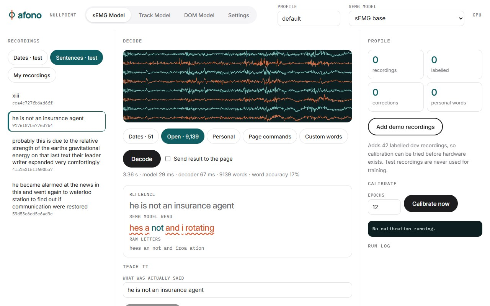

Look.
A plain webcam follows your eyes and snaps to the button you are looking at.
Prototype. Scored in degrees and target hit rate.Nullpoint
Earbuds, glasses, a webcam or skin sensors become one short set of commands that works on any page, without your hands.
The line behind the glass is real muscle activity from the demo recordings.
New wearables are learning to hear whispers and read the muscles of speech. Every one of them still needs a way to act on a real computer. Nullpoint is that layer: one fixed grammar any sensor can feed, on pages that already know their own buttons.
14 verbs and 10 digits. A verb, then a number said digit by digit. Twenty-four words reach every target on every site.
The DOM Model numbers every link, button and field, so the command lands on the right target.
A fixed set of 24 words is small enough to learn on each new sensor, and the page supplies the targets. Swap the hardware; the commands stay the same.
Each input gives odds over the same commands and Nullpoint multiplies them. A whisper plus a glance beats either alone.
A command runs only when it is clear, its target is on screen and Nullpoint is awake. Say “afono” to wake it, “sleep” to stop.
A plain webcam follows your eyes and snaps to the button you are looking at.
Prototype. Scored in degrees and target hit rate.Whisper into the earbuds you own, or mouth the word in silence: skin sensors read the muscles of speech.
96.5% word accuracy on 51 words, 95% CI 93.3–98.9%Every button and link on screen gets a number, so “click two five” always means one thing.
Prototype. 17 of 17 targets found on our test page.
One speaker, public dataset, official test split. Small, fixed vocabularies already work silently. Open vocabulary does not, which is why Nullpoint uses a fixed grammar. Its own numbers come next.
word accuracy on silent dates and times, 51-word vocabulary
on that task, at the natural pace of the recordings
on free-form sentences, 500-word vocabulary. The goal is 90%.
Real recordings of a person mouthing words with no sound, from the public Gaddy & Klein dataset. The first recordings in the test set, not hand-picked.
The 9 MB model loads when you press Decode. Nothing leaves your device.
A 9.2 MB model. No cloud, and no recording leaves your computer.
Code, models and the full run log are public, including what failed. Anyone can rerun every number.
The earbuds and webcam you own today, or an open $50 sensor design for silent speech.
We are starting small pilots with people who cannot rely on their hands, and looking for hardware teams who want their wearable to work on a real computer.